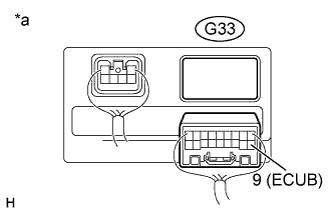
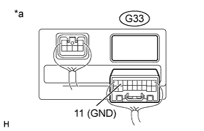

DTC B2620 ECU Power Source Circuit Malfunction |
| DTC Code | Detection Condition | Trouble Area |
| B2620 | The ECU power source voltage drops to 8 V or less for 10 seconds or more. |
|
| 1.CHECK HARNESS AND CONNECTOR (MULTIPLEX TILT AND TELESCOPIC ECU - BATTERY) |
|  |
Disconnect the G33 multiplex tilt and telescopic ECU connector.
Measure the voltage according to the value(s) in the table below.
| Tester Connection | Condition | Specified Condition |
| G33-9 (ECUB) - Body ground | Always | 11 to 14 V |
| *a | Rear view of wire harness connector (to Multiplex Tilt and Telescopic ECU) |
|
| ||||
| OK | |
| 2.CHECK HARNESS AND CONNECTOR (MULTIPLEX TILT AND TELESCOPIC ECU - BODY GROUND) |
|  |
Measure the resistance according to the value(s) in the table below.
| Tester Connection | Condition | Specified Condition |
| G33-11 (GND) - Body ground | Always | Below 1 Ω |
| *a | Rear view of wire harness connector (to Multiplex Tilt and Telescopic ECU) |
|
| ||||
| OK | ||
| ||